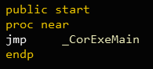
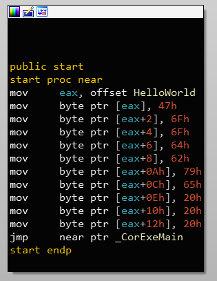
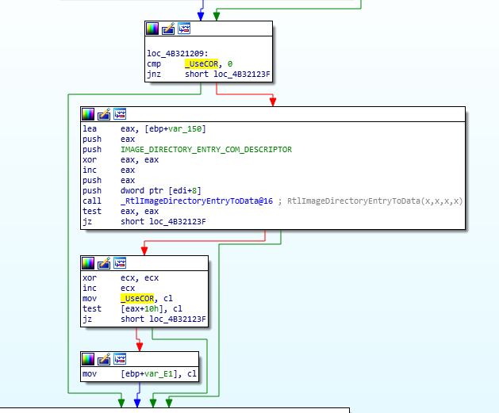

How .NET executables are loaded
I’ve always wondered how .NET executables are loaded..
Loading a .NET executable into IDA Pro, I saw that the entry point contains this jump statement to _CorExeMain. It looked like this function call loads the CLR and starts running the .NET code.

This made me think that I can patch the entry point to add native code before the CLR is loaded - this can be useful to hide shellcode or pack executables for example. So, I wrote a simple “Hello World” program in C# and I tried to change the “HelloWorld” string before calling _CorExeMain:

But it turns out that this code does not run at all. I know it because I tried replacing the jump statement with nops and the program still worked. btw, On x64 binaries, this stub does not exist at all. (I guess it’s some compiler flag or something)
This stub was used on older versions of windows. On newer versions, ntdll!LdrpInitializeProcess sets ntdll!_UseCOR to TRUE if the .NET Metadata directory exists. After that, ntdll calls MSCOREE!_CorExeMain by itself. Goodbye cool packing techniques:(
